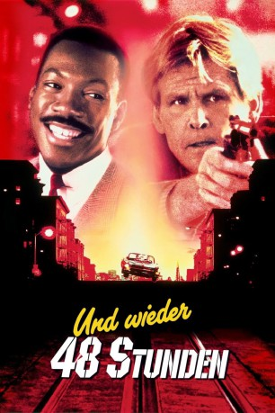
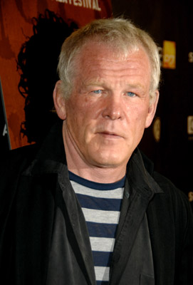
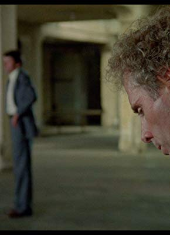
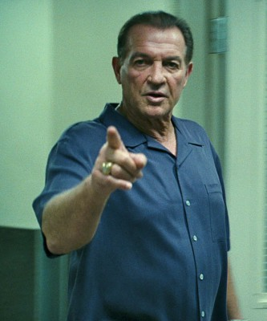
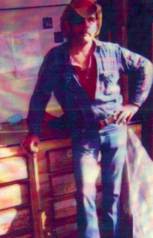
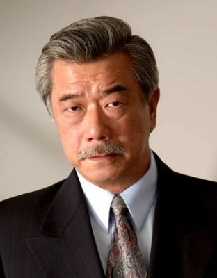
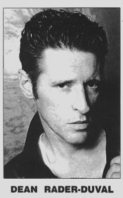

#10632 Und wieder 48 Stunden
Alternativ: Another 48 Hrs. (Englischer Titel)
 
 IMDB-Wertung: 5.8 / 10
IMDB-Wertung: 5.8 / 10  Metascore: 23
Metascore: 23 
Bei den Ermittlungen gegen den berüchtigten Drogenhändler "The Iceman" stößt Cop Jack Cates auf einen Mordauftrag gegenüber Reggie Hammond, der zur Zeit noch im Knast sitzt. Zusammen mit Cates hatte er vor Jahren einen Gangster zur Strecke gebracht. Da Hammond am nächsten Tag aus dem Gefängnis entlassen wird, taucht Cates bei ihm auf, um ihn zu einer erneuten Zusammenarbeit zu überreden. Gemeinsam mit Hammond will Cates "The Iceman" das Handwerk legen. Für Hammond könnte das von großem Nutzen sein, schließlich ist sein eigenes Leben bedroht. Wegen einer Streitigkeit hat der Ex-Gefangene aber zunächst keine Lust zur Kooperation. Als sich die Bedrohung gegen ihn in einer handfesten Schießerei manifestiert, dämmert es Hammond, dass das Angebot von Cates vielleicht doch nicht so schlecht war...
Jahr: 1990
Dauer: 91 Minuten
FSK: 16
Land: USA Studio: Paramount PicturesTonspuren: DD5.1 - ,
Untertitel:
Auflösung: 1080p (1920x1080) Größe: 3737 MB
Genre: Action, Thriller, Drama, Komödie, Krimi, Mystery
Regisseur:  Walter Hill
Walter Hill
Drehbuch: Roger Spottiswoode, Walter Hill, Larry Gross, Steven E. de Souza, Eddie Murphy
Soundtrack: James Horner
Darsteller:
 Eddie Murphy als Reggie Hammond
Eddie Murphy als Reggie Hammond-  Nick Nolte als Jack Cates
 Brion James als Ben Kehoe
Brion James als Ben Kehoe Kevin Tighe als Blake Wilson
Kevin Tighe als Blake Wilson Ed O'Ross als Frank Cruise
Ed O'Ross als Frank Cruise- David Anthony Marshall als Willie Hickok
 Andrew Divoff als Richard 'Cherry' Ganz
Andrew Divoff als Richard 'Cherry' Ganz Bernie Casey als Kirkland Smith
Bernie Casey als Kirkland Smith Brent Jennings als Tyrone Burroughs
Brent Jennings als Tyrone Burroughs Ted Markland als Malcolm Price
Ted Markland als Malcolm Price- Tisha Campbell-Martin als Amy Smith
-  Felice Orlandi als Warden
- Page Leong als Angel Lee
- Cathy Haase als Girl Bartender
- Dennis Hayden als Barroom Tough
- Kelly L. Goodman als Diner Waitress
- Hoke Howell als Desert Bartender
- Yana Nirvana als CHP Officer
-  Ken Medlock als CHP Officer
- Joel Weiss als Pit Man
-  Jason Ronard als Prison Guard Ronard
- Stafford Morgan als Prison Guard Morgan
- Allan Graf als Bus Driver
- Nancy Everhard als Female Doctor
 Mark Phelan als Doctor
Mark Phelan als Doctor- Biff Yeager als County Sheriff
- Rick Cicetti als Traffic Cop
- Michael Anthony Williams als Bar Band
 Karen Huie als King Mei Clerk
Karen Huie als King Mei Clerk George Cheung als Hotel Guest
George Cheung als Hotel Guest-  Dana Lee als Arguing Man
- Richard Lee-Sung als Arguing Man
- Kitten Natividad als Girl in Movie
- Russ McCubbin als Doorman
- Nicole Rubio als Birdcage Waitress
 Frank McRae als Haden (uncredited)
Frank McRae als Haden (uncredited)-  Dean Rader-Duval als Pitman (uncredited)
- Edward Walsh als Detective Joe Stevens
- John Del Regno als Mechanic
- Oz Tortora als Lawyer
- John Bluto als Review Board Chairman
- Bill Dunnam als Prison Guard Dunnam
- Thornton Simmons als Prison Clerk
- John H. Evans als County Sheriff
- Laurie Morrison als Pickpocket
- David Efron als Barroom Fighter
- Rex Pierson als Barroom Fighter
- Rodney Shelton als Bar Band
- Jake Hunter als Bar Band
- Ray Fuller als Bar Band
Datei: X:\2-Dilogie(A-F)\48 Stunden\Und wieder 48 Stunden (1990, FSK16, 1920x1080).mkv seit 04.02.2019
Festplatte: HD Collection-2(A-Z)-3(A-M)
 Alle Filme aus Gruppe '2-Dilogie(A-F)\48 Stunden'
Alle Filme aus Gruppe '2-Dilogie(A-F)\48 Stunden'